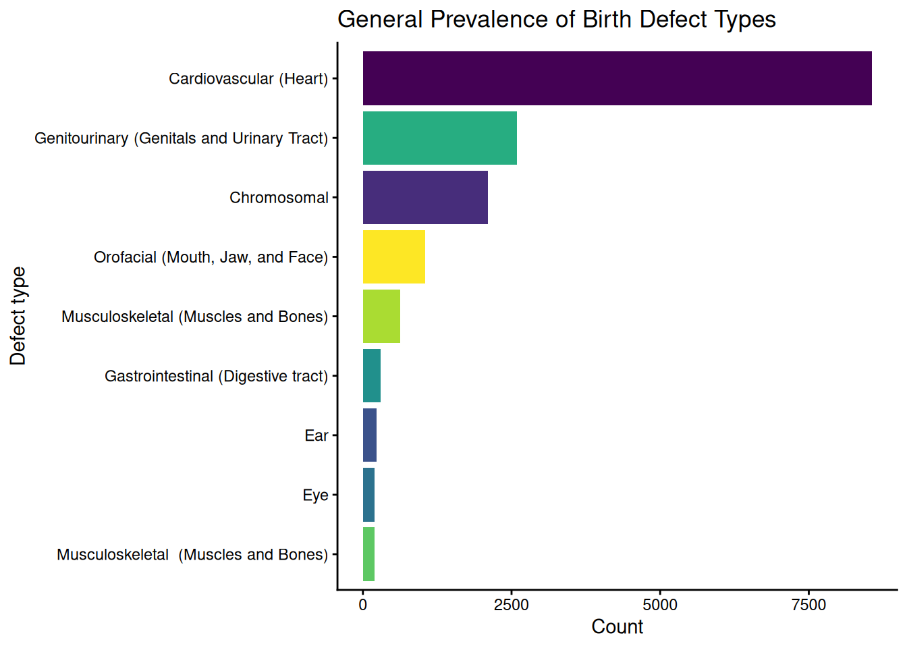
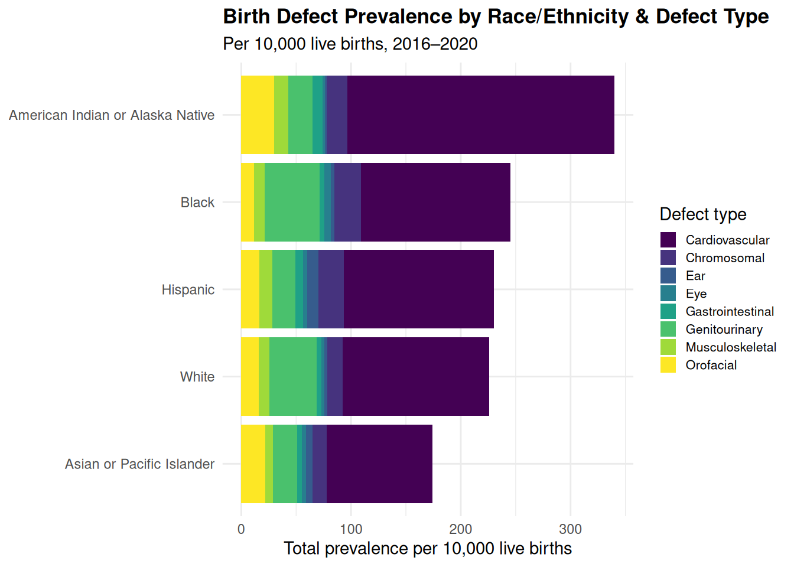

Project Title
How does food policy, education, and socioeconomic status shape birth defect outcomes across populations?
Background & Motivation
Birth defects affect thousands of families in Minnesota and these conditions vary significantly in prevalence across racial, economic, and educational groups, from cardiovascular malformations to neural tube defects. Two questions drove forth our analysis for this project:
- Question 1: What maternal characteristics increase the risk for different types of birth defects?
- Question 2: How did the folic acid fortification policy affect the prevalence of Neural Tube Defects (NTDs)?
Neural tube defects (NTDs) are a serious condition that affect the brain, spine, or spinal cord and typically form within the first month of pregnancy, often before a mother even knows she is pregnant.
Folate is a vitamin B9 nutrient that is important for DNA synthesis, cell division, and cell formation. Natural folate is found in leafy greens, legumes, nuts, and fortified grains, while synthetic folic acid is better absobred and typically taken as supplements. More than half of NTDs are preventable with adequate folate and folic acid intake.
The CDC recommends that all women from ages 15 to 45 should consume 400 mcg of folic acid daily, even if they are not planning on a pregnancy.
Data Used
To answer our research questions, we looked at datasets from the Minnesota Department of Health.
Folic Acid
The first of these datasets is the Folic Acid dataset.
This has by-year data on neural tube defect prevalence from 1995 to 2011, and has information about racial demographics. The data was sourced from the National Center on Birth Defects and Developmental Disabilites. This data was reported to the CDC by 19 separate U.S. state surveillance programs.
The dataset also includes information on folic acid supplementation, which is sourced from the CDC’s Pregnancy Risk Assessment Monitoring Systems programming. New families may be randomly picked to participate from the birth certificate registry, and recieve a survey to answer.
Maternal Characteristics
The second of the datasets is about maternal characteristics, which includes information about age, race, and ethnicity, and specific birth defect prevalences. This data comes from the Minnesota Birth Defects Information System, which collects data from Minnesota hospitals and clinics about birth outcomes and demographics.
Folic Acid Fortification Policy
The path from scientific discovery to food policy was slow and contested — with real consequences for birth defect rates.
During the time of 1983–199, a landmark study found about a 71% reduction in NTDs when folic acid intake was increased. Thus, the CDC issued a formal recommendation, but supplements were only available by prescription which limited access for families of lower-income.
Then in 1993, the FDA began to consider fortification and added vitamins directly to grain products, although they recognized that supplements by themselves would not be able to reach populations who were most at risk, as well as the fact NTDs would form before many women knew they are pregnant.
Within the few years of 1996–1997, the FDA published its ruling on folic acid fortification and NTD rates begin to slowly decline slightly.
Then finally in 1998 and onwards, the folic acid fortification for grain products became mandatory and NTD rates continued to decline across all racial groups, although racial gaps did still persist.
Supplementation: Education & Poverty Gaps
Despite the fortification policy, the daily supplementation rates varied drastically by education and poverty levels among Minnesota mothers (2016-2022).
The gap between the lowest (21.3%) and the highest (53.2%) education groups is around 32.6%. This directional pattern is the same for poverty levels as mothers with low poverty levels supplement daily around 49.6% while those in more moderate-to-high poverty level groups hover around 24% of daily folic acid intake. Both of the dimensions on education
point in the same direction, suggesting a compounding disadvantage. Mothers who are both lower-income and less educated face the greatest barriers to consistent folic acid intake — and therefore the highest exposure to preventable NTD risk.
Birth Defect Prevalence by Race/Ethnicity
When looking at the birth defect outcomes by maternal race/ethnicity in Minnesota (2016–2020), the disparities reflected smth smth

American Indian or Alaska Native and Black/non-Hispanic mothers have the highest burden in overall birth defect. These groups are those that also face disproportionate socioeconomic barriers, which is consistent with the supplementation gaps we observed for those of lower education and higher poverty levels.

For neural tube defects specifically, Hispanic populations are seen to experience the highest NTD prevalence in Minnesota, even despite the racial gap narrowing after the 1998 fortification. Meanwhile, black/non-Hispanic mothers show the lowest rates of NTDs.
Key Findings & Takeaways
While the FDA’s ruling on fortification made an impact across racial and ethnic groups, it did not entirely close the gap in neural tube defect prevalence.
This trend also continues with other birth defects, as we see significant differences by race. Policy changes have reduced the burden equally, but signs still point to systemic inequities at play.
Limitations & Future Work
The NTD prevalence data is only available for Hispanic, White/non-Hispanic, and Black/non-Hispanic groups, so the NTD and overall birth defect datasets cannot be combined directly as they may use different scaling methods and time periods.
The time frame and geographic range is also limited. More context on national patterns over more time could reveal more trends and insights.
The supplementation data is self-reported, which can cause overestimation and recall bias.
Additionally, many other factors, like insurance status and diet may be at play for both supplementation habits and prevalence.